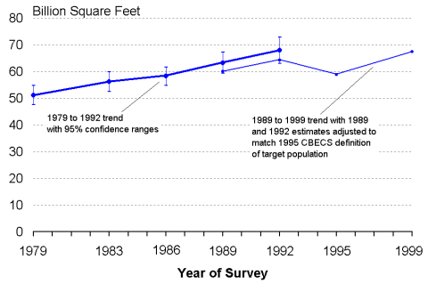

|
Background: Adjustment to data
|
Commercial Floorspace Trend — DetailEach CBECS estimate has a range of uncertainty because the CBECS is a sample survey (see Overview of the Commercial Buildings Energy Consumption Survey for further discussion). Changes between successive surveys are often not confirmed because the uncertainties of the estimates exceed the amount of change; however, change is confirmed if the trend continued across several survey cycles and the total change exceeded the uncertainties. Amount of Commercial FloorspaceThe floorspace trend is similar to the buildings trend. There was a statistically significant increase in floorspace from 1979 to 1992 (Figure 1). The apparent decline from 1992 (adjusted) to 1995 was not statistically significant (Figure 2). Figure 1. 1979 to 1992 floorspace trend with 95% confidence ranges

Energy Information Administration Figure 2. 1989 to 1999 floorspace trend with 95% confidence ranges
Energy Information Administration
Return to “Trends in Buildings and Floorspace” Specific questions may be directed to: Alan Swenson Release date: 01/12/2000 /consumption/commercial/data/archive/cbecs/consumptionbriefs/cbecs_trends/
floorspace_detail.html If you are having any technical problems with this site, please contact the EIA webmaster at wmaster@eia.doe.gov.
|
|||||||||||||||||||||||||||||||||||||||||||||||||||||||